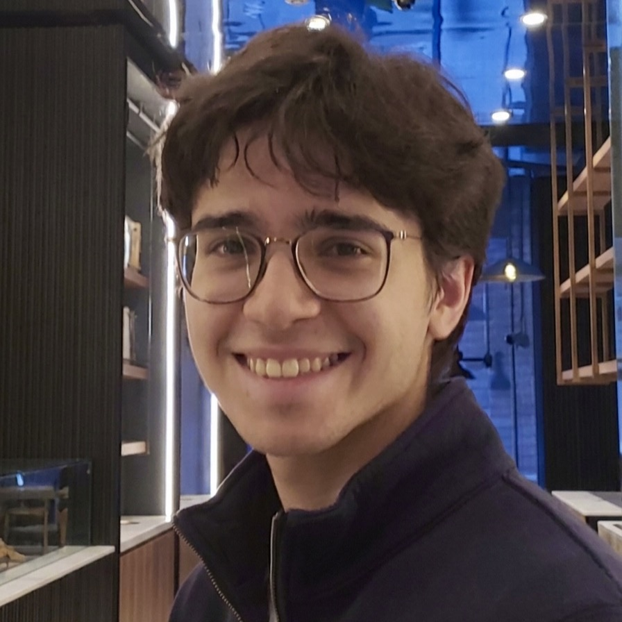

Joaquín Martínez
Ingeniero Comercial · Magíster en Análisis Económico · Universidad de Chile
Ingeniero Comercial licenciado en Ciencias Económicas. Me interesan la organización industrial, teoría de juegos y las finanzas corporativas. Busco aprender de métodos econonométricos con aplicaciones a regulación en contextos de competencia y decisiones de negocio.
Sobre mí
Soy Ingeniero Comercial de la Universidad de Chile y actualmente curso el Magíster en Análisis Económico. Me formé con un enfoque cuantitativo en microeconomía, econometría y finanzas.
Quiero trabajar en entender estructuras de mercado, apoyar decisiones financieras y construir modelos robustos con utilidad en competencia/regulación y de decisiones de mercado.
Tengo experiencia como ayudante de investigación en organización industrial y he desarrollado proyectos propios en macroeconometría y teoría económica aplicada.
Materiales
Ayudantías de Organización Industrial
Ejercicios de Microeconomía II de cuando era ayudante.
Apuntes de EcoPol
Apuntes de equilibrio general, consumo, teoría de juegos, competencia oligopólica y fallas de mercado.
Introducción a la Economía
Clases para mis tutorías de Economía.
Calendario de Estudio
Generador de plan de estudio con repetición espaciada. Distribuye repasos automáticamente según el tiempo disponible antes del examen.
FenVID y Trabajos
Canal de YouTube donde enseño conceptos de economía. Visitar canal →
Caja de Edgeworth 2x2x2
Un approach a Equilibrio General con Producción para Pregrado
Modelo de Diferenciación Horizontal
Un breve modelo de diferenciación horizontal, con funciones de respuesta y equilibrio de máxima diferenciación
Modigliani & Miller
Introducción M&M, proposiciones I y II.
Aplicación de BVAR
Replicación de Eterovic y Eterovic (2022) para 2025. Descomposición de shocks estructurales para la curva de rendimiento en Chile
Revisión de Literatura - Labor Mismatch
Revisión de la literatura respecto a las mediciones e identificación del desajuste laboral.
Salir a la Pizarra
Modelo de monitoreo docente bajo IA generativa. Distingue el efecto disuasivo y pedagógico del monitoreo en el esfuerzo del estudiante.